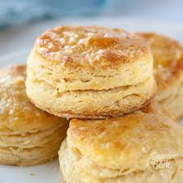

Biscuts
Biscuits

Description
These fluffy, buttery biscuits are perfect for breakfast as well as dinner. Pair with gravy for a filling snack.
Ingredients
- 2cups all-purpose flour
- 1TBSP baking powder
- 1TBSP sugar
- 1tsp salt
- 6TBSP butter, frozen and grated
- 3/4cup milk
Steps
- preheat oven to 425°F and grease a baking pan
- combine dry ingredients
- add frozen butter and combine until has the appearance of bread crumbs
- add milk and combine to form a loose dough
- knead until just cohesive
- roll out onto floured surface
- fold 5-6 times, flatten until 1" thick
- cut using a biscut cutter or large glass
- bake at 425°F for 12 minutes or until tops are golden
- brush tops with melted butter and serve